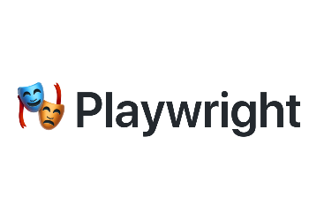

Web scraping is closely related to data analysis because it serves as a valuable means of
collecting data that can be subsequently used for in-depth analysis.
It allows you to collect data from various online sources, including websites, forums,
social media, e-commerce sites, and more.
I would like to clarify that the web scraping activities I am currently undertaking are
solely for educational purposes. My primary goal is to learn and gain practical experience
in differents web scraping techniques & tools for data analysis.

Web Scraping
BeatifulSoup
Beautiful Soup is a Python library used for web scraping, parsing HTML, and navigating through web documents. Often employed for data analysis and web data extraction tasks. It allows you to scrape information such as text, links, images, tables, and more from websites. This is particularly valuable for collecting data for research, analysis, or any other purpose.
import httpx
from bs4 import BeautifulSoup
import time
from urllib.parse import urljoin
from dataclasses import dataclass, asdict
import csv
@dataclass
class Item:
name : str | None
price : str | None
link : str | None
def get_html(url, **kwargs):
headers = {"User-Agent":"Mozilla/5.0 (Windows NT 10.0; Win64; x64) AppleWebKit/537.36
(KHTML, like Gecko) Chrome/119.0.0.0 Safari/537.36"}
if kwargs.get("page"):
response = httpx.get(url + str(kwargs.get("page")),headers=headers, follow_redirects=True)
time.sleep(2)
else:
response = httpx.get(url ,headers=headers, follow_redirects=True)
time.sleep(2)
try:
response.raise_for_status()
except httpx.HTTPStatusError as exc:
print(f"Error response {exc.response.status_code} while requesting {exc.request.url!r}.
Page Limit Exceeded")
return False
soup = BeautifulSoup(response.text, 'html.parser')
return soup
def parse_item(product):
name_element = product.find('span', attrs={'data-ui': 'product-title'})
name = name_element.text if name_element else None
price_element = product.find('span', attrs={'data-ui': 'full-price'})
price = price_element.text if price_element else None
link_product = product.find('a', href = True)
link = urljoin("https://www.rei.com/",link_product.get('href','') )
new_item = Item(name=name, price=price,link=link)
return new_item
def to_csv(items):
with open("results20.csv", "w") as f:
writer = csv.DictWriter(f,fieldnames=["name","price","link"])
writer.writeheader()
writer.writerows(items)
def main():
products =[]
items =[]
baseurl = 'https://www.rei.com/search?q=bike+29&page='
for x in range(1,2):
soup=(get_html(baseurl,page=x))
if soup is False:
break
products = soup.find_all('li', class_='VcGDfKKy_dvNbxUqm29K')
for product in products:
item = parse_item(product)
items.append(asdict(item))
to_csv(items)
if __name__ == "__main__":
main()
Playwright + Selectolax
Playwright is an open-source automation framework for web browsers that was developed by Microsoft. It provides a set of APIs and tools for automating actions in web browsers, such as interacting with web pages, filling out forms, and extracting data. Is a powerful tool for automating web interactions and performing tasks like web scraping, automated testing, and web application monitoring. Its cross-browser support, comprehensive features, and ease of use have made it a popular choice for developers and testers who need to automate browser-related tasks.
import httpx
from selectolax.parser import HTMLParser
import time
from urllib.parse import urljoin
from dataclasses import dataclass, asdict
import csv
@dataclass
class Item:
name : str | None
price : str | None
link : str | None
item_num : str | None
rating : float | None
def get_html(url, **kwargs):
headers = {"User-Agent":"Mozilla/5.0 (Windows NT 10.0; Win64; x64)
AppleWebKit/537.36 (KHTML, like Gecko)
Chrome/119.0.0.0 Safari/537.36"}
if kwargs.get("page"):
response = httpx.get(url + str(kwargs.get("page")),headers=headers,
follow_redirects=True)
else:
response = httpx.get(url ,headers=headers, follow_redirects=True)
try:
response.raise_for_status()
except httpx.HTTPStatusError as exc:
print(f"Error response {exc.response.status_code} while requesting
{exc.request.url!r}. Page Limit Exceeded")
return False
html = HTMLParser(response.text)
return html
def extract_text(html,sel): # Function that cleans data from each product
try:
return html.css_first(sel).text()
except AttributeError:
return None
def parse_search_page(html:HTMLParser):
products = html.css("li.VcGDfKKy_dvNbxUqm29K")
for product in products:
yield urljoin("https://www.rei.com/", product.css_first("a")
.attributes["href"] )
def parse_item_page(html,url):
new_item = Item(
name = extract_text(html,"h1#product-page-title"),
item_num= extract_text(html,"span#product-item-number"),
price = extract_text(html,"span#buy-box-product-price"),
rating = extract_text(html,"span.cdr-rating__number_13-5-3"),
link= url
)
return new_item
def to_csv(res):
with open("results.csv", "w") as f:
writer = csv.DictWriter(f,fieldnames=["name","item_num","price",
"rating","link"])
writer.writerows(res)
def main():
products = []
baseurl = "https://www.rei.com/search?q=bike+29&page="
for x in range(1,2):
html=get_html(baseurl,page=x)
if html is False:
break
products_url = parse_search_page(html)
for url in products_url:
html = get_html(url)
products.append(asdict(parse_item_page(html,url)))
time.sleep(1)
to_csv(products)
#for product in products:
# print(product)
if __name__ == "__main__":
main()
HTTPX + Selectolax
HTTPX and Selectolax are two Python libraries that can be used together for web scraping. HTTPX is a fully featured HTTP client for Python 3, which provides a high-level interface for making HTTP requests. Selectolax is a fast and robust HTML and XML parser library, designed to be more efficient and faster, making it a great choice for web scraping.
import httpx
from selectolax.parser import HTMLParser
import time
from urllib.parse import urljoin
from dataclasses import dataclass, asdict
import csv
import json
@dataclass
class Item:
name : str | None
price : str | None
link : str | None
item_num : str | None
rating : float | None
def get_html(url, **kwargs):
headers = {"User-Agent":"Mozilla/5.0 (Windows NT 10.0; Win64; x64) AppleWebKit/537.36 (KHTML, like Gecko) Chrome/119.0.0.0 Safari/537.36"}
if kwargs.get("page"):
response = httpx.get(url + str(kwargs.get("page")),headers=headers, follow_redirects=True)
else:
response = httpx.get(url ,headers=headers, follow_redirects=True)
try:
response.raise_for_status()
except httpx.HTTPStatusError as exc:
print(f"Error response {exc.response.status_code} while requesting {exc.request.url!r}. Page Limit Exceeded")
return False
html = HTMLParser(response.text)
return html
def extract_text(html,sel): # Function that cleans data from each product
try:
text = html.css_first(sel).text()
return clean_data(text)
except AttributeError:
return None
def parse_search_page(html:HTMLParser):
products = html.css("li.VcGDfKKy_dvNbxUqm29K")
for product in products:
yield urljoin("https://www.rei.com/", product.css_first("a").attributes["href"] )
def parse_item_page(html,url): # Selectors here are diff from general page, bc belongs to product's page
new_item = Item(
name = extract_text(html,"h1#product-page-title"),
item_num= extract_text(html,"span#product-item-number"),
price = extract_text(html,"span#buy-box-product-price"),
rating = extract_text(html,"span.cdr-rating__number_13-5-3"),
link= url
)
return asdict(new_item)
def to_json(products):
with open("results01.json", "w", encoding="utf-8") as f:
json.dump(products,f,ensure_ascii = False, indent = 4)
def to_csv(products):
with open("results.csv", "w") as f:
writer = csv.DictWriter(f,fieldnames=["name","item_num","price","rating","link"])
writer.writerows(products)
def save_csv(products):
keys = products[0].keys()
with open('results01.csv', 'w') as f:
dict_writer = csv.DictWriter(f,keys)
dict_writer.writeheader()
dict_writer.writerows(products)
def clean_data(value):
chars_to_remove = ['$', 'Item', '"','#' ]
for char in chars_to_remove:
value = value.replace(char,'')
return value.strip()
def main():
products = []
baseurl = "https://www.rei.com/search?q=bike+29&page="
for x in range(1,2): #Testing url is available, search page, PAGINATION
html=get_html(baseurl,page=x)
if html is False:
break
products_url = parse_search_page(html)
for url in products_url: #Testing url's product individually
html = get_html(url)
products.append(parse_item_page(html,url))
time.sleep(1)
#save_csv(products)
to_json(products)
if __name__ == "__main__":
main()
United States of America